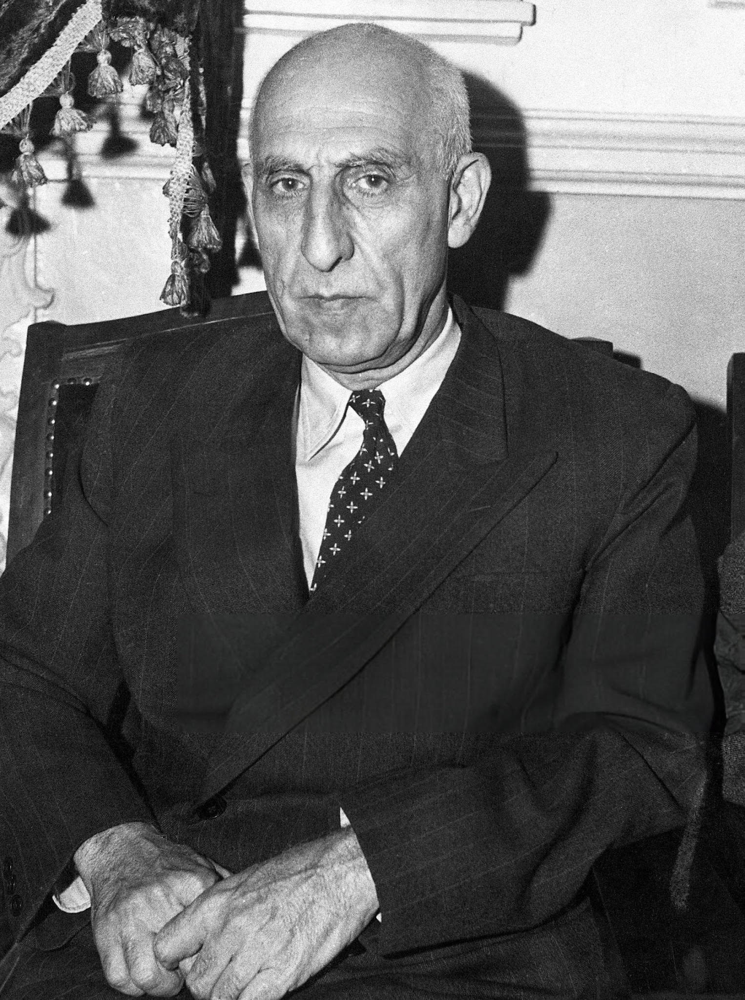
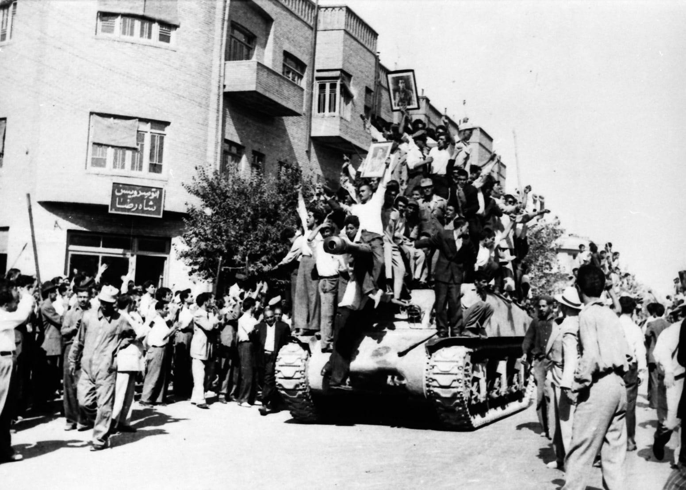
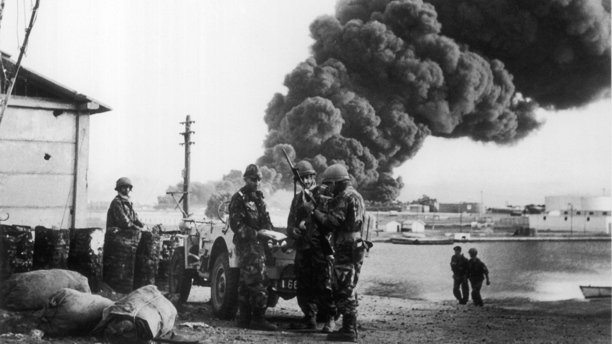

1945–1979
1945–1979: The Cold War and the Limits of Democratic Ideals
15Cold War strategic framing
The U.S.–Soviet rivalry made the Middle East important for petroleum, transportation routes, alliances, and geography. American policymakers feared that unstable or anti-Western movements might enable Soviet expansion. However, nationalism was not automatically communism. A government could seek independence from Western control without seeking Soviet domination. U.S. officials sometimes nevertheless evaluated a government's legitimacy through its likely alignment, making strategic friendship an important criterion alongside ideals of political freedom.
16Recognition of Israel, 1948
After the Holocaust and the decline of Britain's mandate, Zionist leaders sought a Jewish state while Palestinian Arabs sought political rights and opposed partition they regarded as unjust. UN General Assembly Resolution 181 (1947) recommended Jewish and Arab states and special arrangements for Jerusalem. Israel declared independence on May 14, 1948; Harry Truman recognized its provisional government that same day. American officials differed over the decision, weighing humanitarian commitments, domestic politics, relationships with Arab states, and regional security. Fighting had already begun before the declaration; the subsequent Arab–Israeli war brought Israeli independence and the displacement of hundreds of thousands of Palestinian Arabs. The proposed Palestinian Arab state did not materialize.
This case illustrates the tension between different national movements' self-determination claims, not just a single American strategic calculation.
17Iran before the coup and the 1953 coup (Operation TPAJAX)
Iran was a constitutional monarchy under Mohammad Reza Pahlavi, with an elected Majlis and contested political authority. Mohammad Mosaddegh became prime minister in 1951 as nationalists demanded greater control over Iranian petroleum. British-controlled Anglo-Iranian Oil Company interests were deeply involved. Iran's nationalization reflected the claim that sovereign states should control their resources. Britain opposed it and exerted economic and diplomatic pressure. The Truman administration initially pursued negotiation, while fears about political instability and the Tudeh Party intensified in U.S. discussions.

Under Eisenhower, U.S. and British intelligence agencies planned to remove Mosaddegh. Planning involved political contacts, propaganda, financial support, and efforts to secure the Shah's participation. An initial effort failed in mid-August; the Shah fled Iran. On August 19, anti-Mosaddegh forces including military and civilian participants prevailed in Tehran. General Fazlollah Zahedi became prime minister and the Shah returned. Iranian political actors were crucial; the coup was not solely the work of foreigners. Declassified CIA records, including an April 16 planning memorandum, show U.S. participation.

The operation strengthened the Shah, who later consolidated authoritarian power. It became a symbol of foreign interference in Iranian political memory, contributing to resentment that persisted through 1979, though the revolution had many causes. This is the clearest case of American strategic priorities overriding noninterference in Iranian domestic political affairs.
18The Suez Crisis, 1956: a crucial counterexample
Nasser nationalized the Suez Canal Company in July 1956 after disputes over the Aswan High Dam. Britain, France, and Israel coordinated an invasion in October. Eisenhower opposed the invasion, fearing damage to Western credibility, growth of Soviet influence, and destabilization, while also objecting to the use of force. The United States pressed for a ceasefire and backed UN action.

Thus, in 1953 strategic calculations contributed to intervention in Iran, while in 1956 strategic calculations encouraged Washington to oppose intervention against Egypt. The same presidency could protect sovereignty or compromise it according to circumstances; this is more nuanced than portraying ideals as always abandoned.
19Eisenhower Doctrine, 1957
Eisenhower offered economic and military support to receptive Middle Eastern governments threatened by communist-linked aggression. Policymakers also feared the growing influence of Nasser's Arab nationalism. The doctrine described protection of independence while aiming to shape governments' international alignment. Historian Salim Yaqub emphasizes the effort to contain Arab nationalism as well as Soviet influence.
20Lebanon, 1958
Lebanon's President Camille Chamoun faced domestic political opposition amid regional tensions; Iraq's monarchy fell in July 1958. Chamoun requested U.S. help, and American Marines landed in Lebanon. A request by a recognized president distinguished this from the 1953 coup, but Lebanese factions disagreed over the intervention. Washington claimed to protect stability and independence while also preserving a friendly political order. The case raises a question: is defending a sitting government the same as respecting all of its people's political aspirations?
21Kennedy, Israel, Egypt, and nuclear concerns
Kennedy sought constructive contact with Nasser's Egypt despite its authoritarian politics and independence from Western policies. In 1962, his administration agreed to provide Hawk surface-to-air missiles to Israel, expanding military ties. Kennedy also pressed Israel for information and inspections concerning the Dimona nuclear facility. He sought regional stability and nuclear restraint while balancing alliances. Democratic values alone did not dictate whether American leaders embraced, pressured, or cooperated with other governments.
22Six-Day War, 1967
Following escalating regional tensions, Israel attacked Egyptian forces on June 5 and fought Egypt, Jordan, and Syria. Israel occupied Sinai, Gaza, the West Bank, East Jerusalem, and the Golan Heights. Washington feared Soviet involvement and wider war while balancing Israel's security and Arab relations. UN Security Council Resolution 242 linked territorial withdrawal to recognition, sovereignty, and security. Palestinian self-determination remained unresolved. This conflict exposes competing claims to territorial independence rather than one easily applied universal rule.
23October 1973 Arab–Israeli War and Kissinger diplomacy
Egypt and Syria attacked Israeli positions in occupied territories on October 6, 1973. The United States resupplied Israel as the Soviet Union assisted Arab partners. The war risked superpower confrontation. Nixon and Kissinger sought to protect Israel and U.S. credibility while preserving Arab relations. Kissinger's shuttle diplomacy supported disengagement agreements. U.S. interests themselves conflicted: alliance security, Soviet containment, and regional diplomacy pulled policy in different directions.
24Arab oil embargo, 1973–1974
Arab oil-producing states embargoed the United States and others following American military support for Israel. Production decisions and international market disruptions contributed to sharply higher oil prices and domestic shortages. Oil-producing states demonstrated bargaining power. Supporting Israel and maintaining cooperative ties with Arab producers became competing U.S. concerns. Regional governments were active agents, not mere objects of American strategy.
25Camp David and the Egyptian–Israeli peace treaty, 1978–1979
Jimmy Carter hosted Anwar Sadat and Menachem Begin in September 1978. Their agreements provided a framework for Egyptian–Israeli peace and a proposal for Palestinian autonomy. The 1979 treaty led to the return of Sinai to Egypt, advancing Egyptian territorial sovereignty. The Palestinian question remained unresolved, and Palestinians were not direct participants in the Camp David talks. Here American strategic goals and recovery of occupied territory aligned, while other self-determination claims remained unsettled.
Chapter connection: U.S. Middle East influence expanded dramatically from 1945 to 1979. Iran showed direct intervention; Suez showed opposition to intervention; Israel and Palestine showed competing national claims; oil revealed regional leverage; Camp David showed peace could serve strategic goals without resolving every right. The pattern is selective application shaped by circumstances, not a single consistent rejection of sovereignty.
Sources for this period
- UN Partition Resolution 181
- FRUS: Iran, 1951–1954
- CIA planning memorandum
- National Security Archive: Iran records
- UN Resolution 242
- Douglas Little, American Orientalism (2008)
- Salim Yaqub, Containing Arab Nationalism (2004)
- Gasiorowski and Byrne, Mohammad Mosaddeq and the 1953 Coup in Iran (2004)
- Ervand Abrahamian, The Coup (2013)
- William B. Quandt, Peace Process (2001)